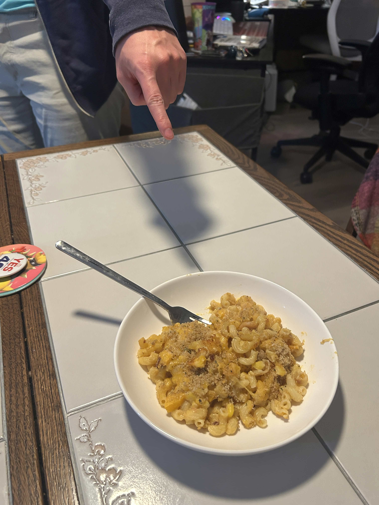
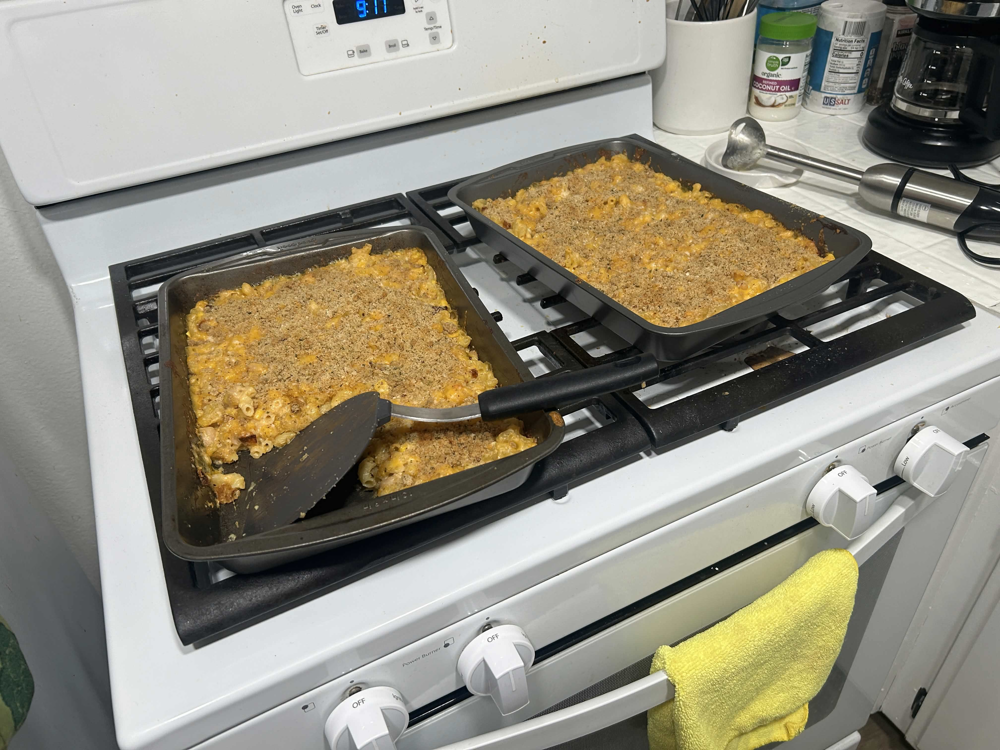

"three sisters" mac & cheese


the "three sisters" are the core agricultural trio cultivated by indigenous americans: corn, beans, and squash.
this recipe started as a recipe for butternut squash mac & cheese from Barefood Tim,
but i like a food with a lot of Chunk, so i was like "what else can i add that'll go with that?"
recently i've been watching videos by Gluten Free Elise who makes
videos about indigenous cooking, agriculture, and culture. so let's see what happens when we try them together!
i also took inspiration from this recipe from
this recipe
for mac and cheese with black beans and chipotle by J Kenji Lopez Alt, which shocked me
for having 0 preamble before the recipe. NONE. he's doing it better than i ever could.
now you may be thikning. "aren't corn, beans, and squash like a southwest-style cooking thing." or maybe you're not thinking that. because i was
not thinking that until i sat down to eat this dish and li was like "well i think the southwest style direction is pretty good." oops
time to cook
if you're me: about 45 minutes work, 15 minutes "sit around do nothing" cook time, 1 hour total
if you're goated at multitasking: maybe 30 minutes work, 15 minutes cook time, 45 minutes total
if you're jack / relatively slow at cooking: like 1 hour 15 minutes work, 15 minutes cook time, 1 hour 45 total
this recipe doesn't require too much chopping, but you have to man the stove and juggle a lot of ingredients.
ingredience!!
- 1 butternut squash (or two 20-ounce packages of precut squash if you're a coward)
- 1 package macaroni pasta
- 3 cups milk
- 1 can beans (i used white beans, but black beans could probably be better)
- 1 can corn
- 2 whole chipotle chiles packed in adobo, minced + 2 tablespoons adobo sauce from the can
- 1 serrano or jalapeño chile, minced
- 4 ounces cream cheese
- 1 teaspoon mustard
- a small amount of ground nutmeg, measured with the heart
- a small amount of ground cayenne, measured with the soul
- 8 ounces of sharp cheddar cheese. or more!! DO NOT SKIMP ON THE CHEESE.
- 4 ounces of gruyere cheese (or any other cheese, or more cheddar if you're cheap/lazy)
- 1/2 cup grated parmejohn cheese
- 3/4th cup panko breadcrumbs
- 2 tablespoons butter
- [ozzy osbourne voice] olive oil
- salt
equipment
- a really big baking pan (quite honestly i split mine between two)
- an immersion blender!!! (a normal blender or mayhaps hand mixer will work but your life will be annoying!)
- one big pot if you value doing less dishes. two big pots if you want to take less time
recipe!!!!!!!!!!
- preheat oven to 400 degrees. start a pot of water (salted) boiling for your pasta.
- prep your butternut squash because you bought a real squash so so bravely (and cheaply) instead of a precut one: cut the top off,
then peel the skin with a vegetable peeler. cut it in half lengthwise (the long way) and scoop out the seeds with a spoon. then
cut into small cubes, about 1/2 inch. skip if you bought pre-cut squash.
- take half your butternut squash. toss in oilve oil, salt, and pepper. set a 45 minute timer and pull it out of the oven when the timer
rings OR when you reach step 7, whichever comes first.
- cook pasta for 2 minutes less than what it says on the package. drain and toss with a bit of olive oil so it doesn't stick.
- while that cooks, take the other half of your squash and put it in a medium-sized pot with milk and like 2 teaspoons of salt. bring to a gentle simmer, cover with lid ajar,
and cook for 12 to 15 minutes until squash is soft and falls apart when poked. stir every minute or so to make sure the milk doesn't boil over.
- blend the squash and milk until smooth with an immersion blender (or cope as hard as possible if you don't have one).
- put the pot over low heat and add drained beans, corn, chipotle chiles and adobo sauce. whisk in cream cheese, mustard,
nutmeg, and cayenne. turn off heat and stir in cheddar and parmesan. pull your roasted squash chunks out of the oven if you haven't already
and mix them in gently.
- pour pasta, sauce, and roasted squash into baking dish and mix. don't worry if it's too saucy it'll be fine #trust. layer with extra cheese!!
- toss panko with melted butter and scatter over the top.
- bake 15 to 18 minutes, until bubbling at the edges and golden on top. rest 5 minutes then serve.
enjoy!!!
back to home